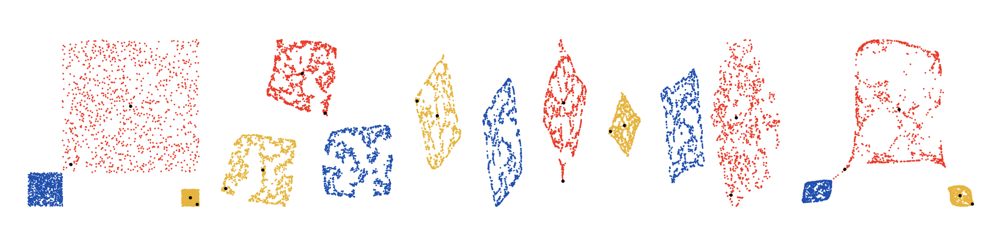
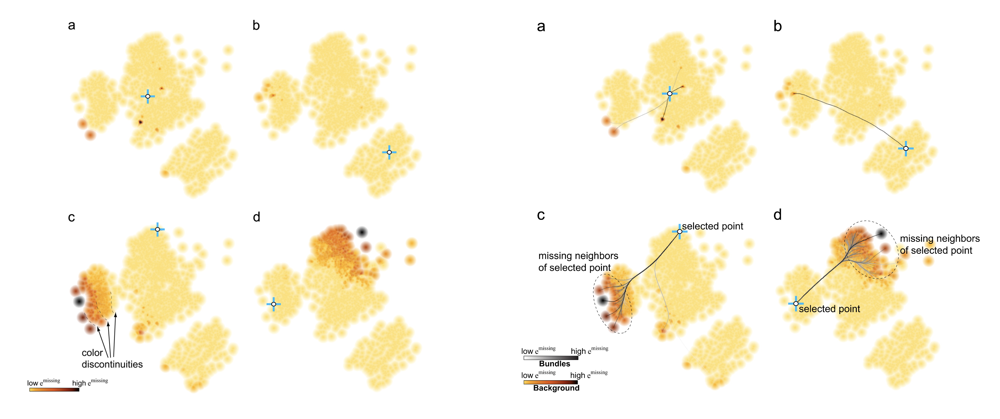

This website provides materials for the DASFAA 2026 tutorial on the reliable use of dimensionality reduction (DR) in visual analytics (VA). The tutorial is designed to be friendly to participants who work with data, databases, or machine learning, but may not have a visualization background. We first explain why visual analytics is useful for reasoning with complex data and how DR turns high-dimensional tables into visual spaces. We then discuss how DR projections can become misleading, and how reliability assessment helps analysts check what the projection preserves, loses, or invents.
All tutorial materials, including slides and supplementary resources, will be made available here.
Part 1: Introduction to Visual Analytics and Dimensionality Reduction

In this part, we introduce data visualization and visual analytics as tools for supporting human reasoning, not just for making pictures. We explain how interaction, filtering, linking, and visual encodings help analysts inspect data patterns and revise questions. We then introduce dimensionality reduction as a mapping from many features to two or three visual dimensions, covering representative methods such as PCA, MDS, t-SNE, and UMAP. The part closes with practical cautions for using DR projections, especially when interpreting distances, clusters, densities, and algorithm parameters.
Part 2: Reliability of Dimensionality Reduction and Its Assessment

In this part, we focus on reliability: whether insights drawn from a DR-based visual analysis reflect the underlying data. We discuss common projection distortions, including missing neighbors, false neighbors, cluster splits, cluster merges, and global distance changes. We then present quality assessment methods at local, cluster, and global levels, along with visual approaches for inspecting where distortions occur in a projection. Finally, we introduce practical assessment workflows and the ZADU Python library for computing DR quality measures.